Artist
Amir Hosein Akbari
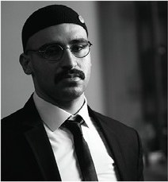
- Born1993
- NationalityIranian
- Works17
- Dated2015
StatementAbout the work
Childhood Dream
Memory works like the collection glass in the Camera obscure: it gathers everything together and therewith produces a far more beautiful picture than was present originally. The art works ahead are validity collection of my childhood dreams and the common part of all dreams, that are all an inanimate witness, made of plastics, cotton and fabrics, acts as the collection glass.
It is the main emotion, that its presence in the whole time is immovable, neither goes ahead nor backward, and makes the environment with its childhood mind. Just thinks about the creation of environment and do not consider the positive, negative or neutral effect of that, it is the omnipresent in all scene and my heart.
This is my childhood legacy. Such dreams and this game table full of all daily pains that is now consisted of some re formed scenes and collected poems will help better to feel this environment consorted by images..
Note: poems and childhood have both a lost feeling, one is like a garden of words which is now empty and the other is the garden of every human, who is lost.
Quotes By Arthur Schopenhauer
Works17 artworks

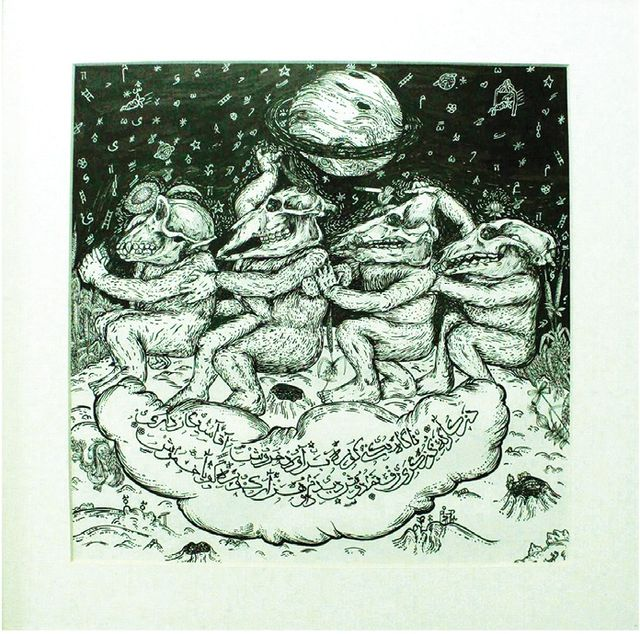

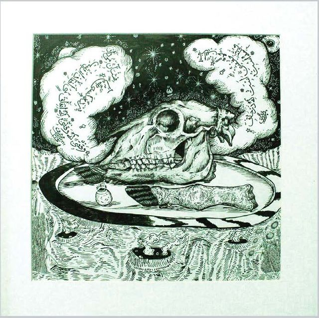

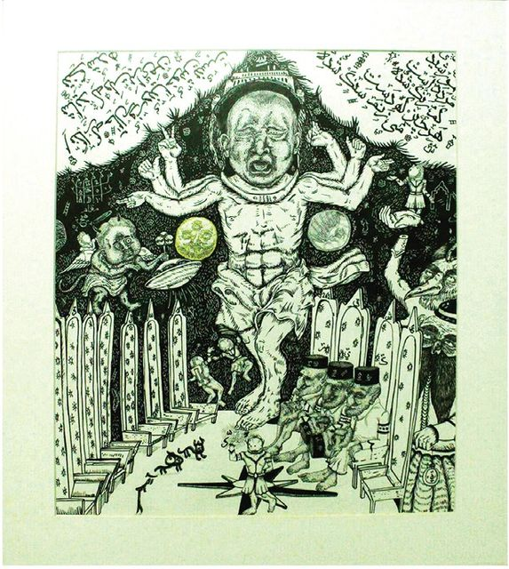

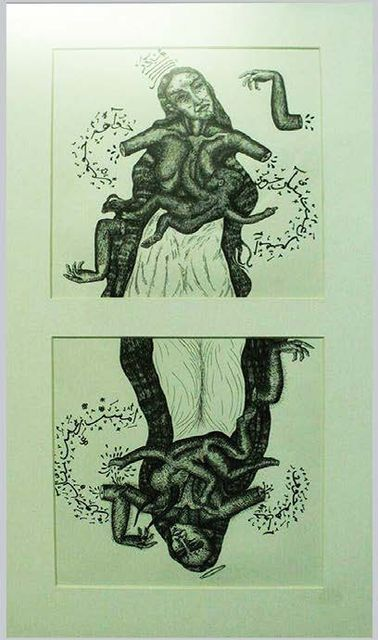

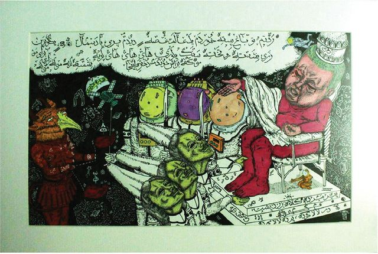

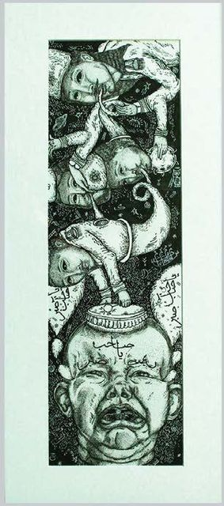

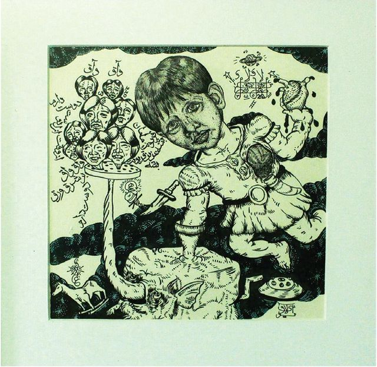

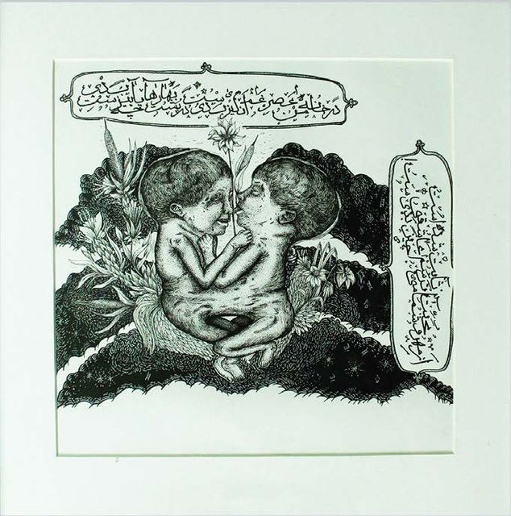

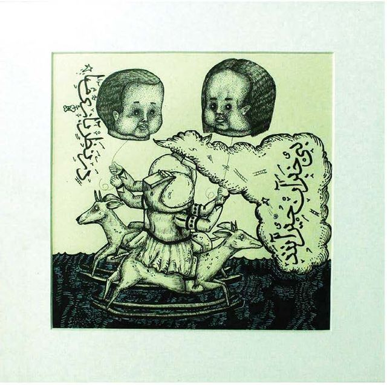

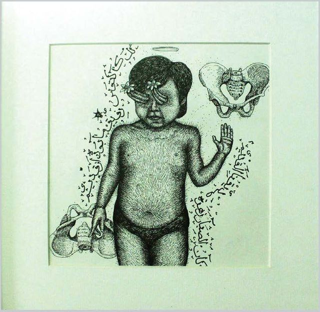

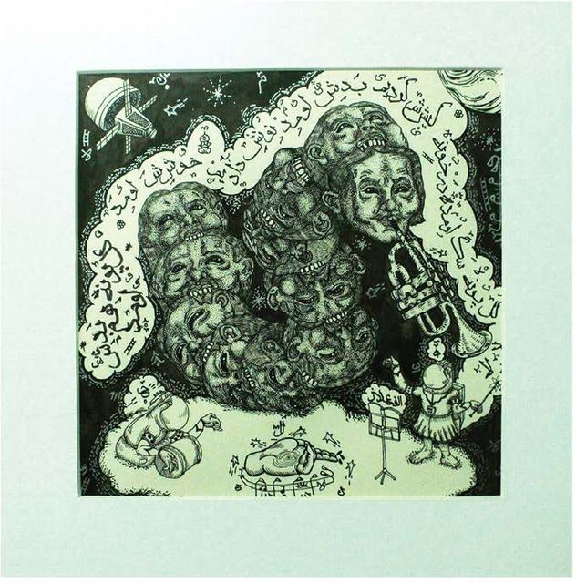

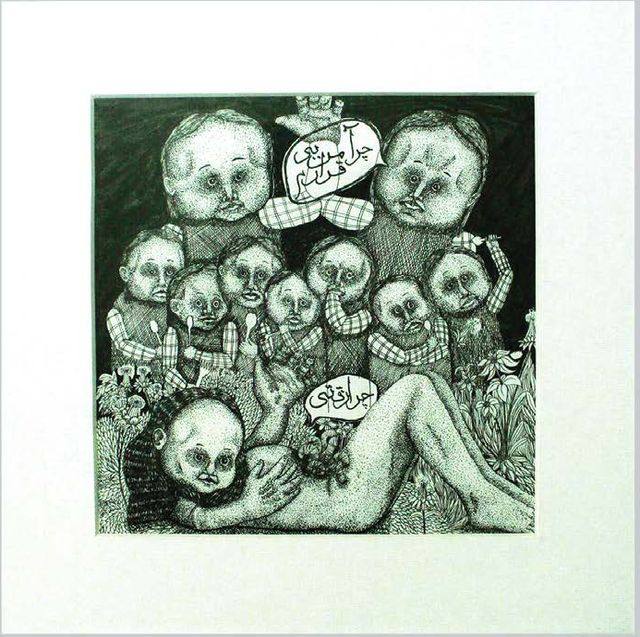

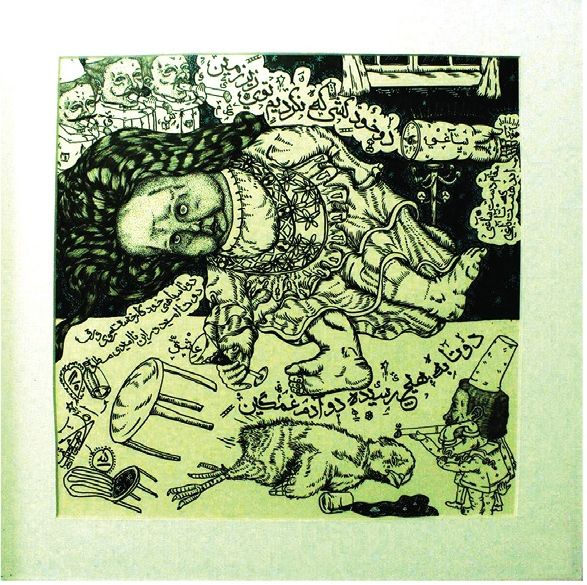

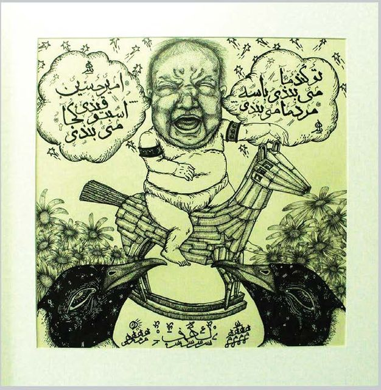

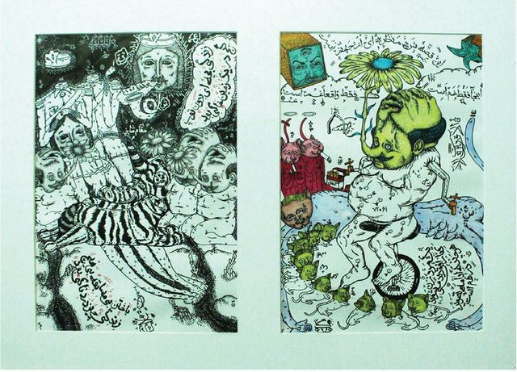

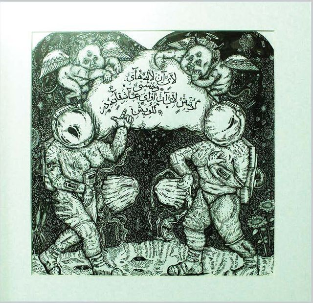

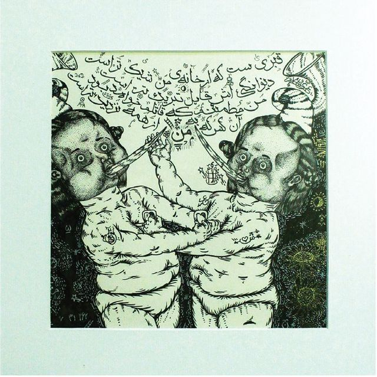
History of experienceBiography · education · exhibitions · awards
Profile
- Graphic student, Enghelab-e Eslami technical College|Tehran – Iran
Solo exhibitions
- 2012Art gallery|Isfahan – Iran
Group exhibitions
- 2015Cactus, Dena gallery|Tehran – Iran
Source: the Sobhan Gallery artist catalogue “AmirHosein Akbari.pdf”.